西兰花小炒搭配
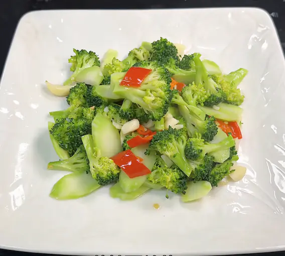
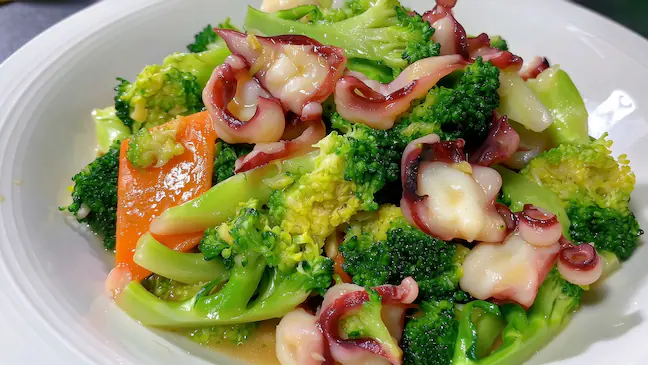
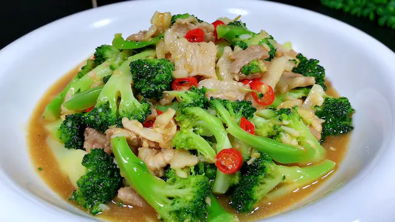
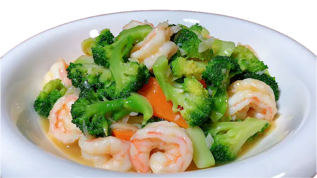
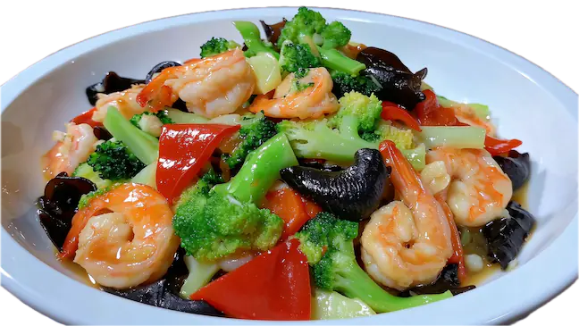
如上图所示：西兰花本身清甜脆嫩、不抢味，是非常万能的小炒基底，能搭配海鲜、瘦肉、菌菇等。
下面展示一道小炒的做法步骤，搭配其他小炒一样的做法：西兰花炒章鱼 干爽、锅气
准备食材
西兰花、章鱼、蒜头、红萝卜、蒸鱼豉油、蚝油、盐、糖、鸡精、水淀粉。
- 西兰花切块；
- 章鱼须斜刀切片，切大、厚点；(这里换成鱿鱼、瘦肉、香菇、虾仁、木耳等等都可以，做法一样)；
- 红萝卜切片；
- 蒜头拍碎切碎；
- 水淀粉；
- 准备料汁，适量蚝油、盐、糖、鸡精、蒸鱼豉油，搅拌均匀。

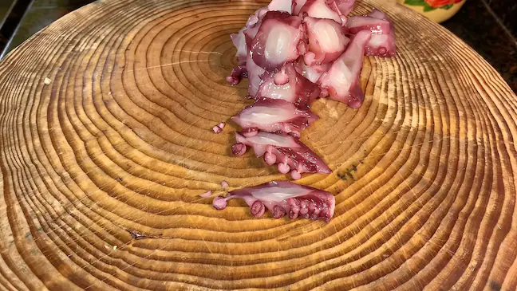
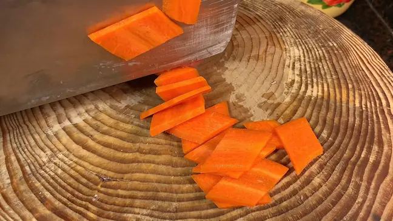
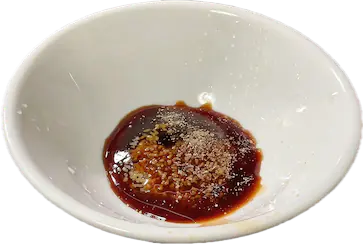
烹饪
- 起锅烧水，水开，焯水西兰花1分钟，捞出备用；
- 保持水开，继续焯水章鱼，20秒，捞出备用；
- 起锅烧油，中小火，放入蒜末、红萝卜片，炒香，炒熟；
- 放入西兰花、章鱼，转大火翻炒几下，倒入料汁，翻炒均匀；
- 倒入水淀粉，薄薄勾一层芡，翻炒均匀，出锅。
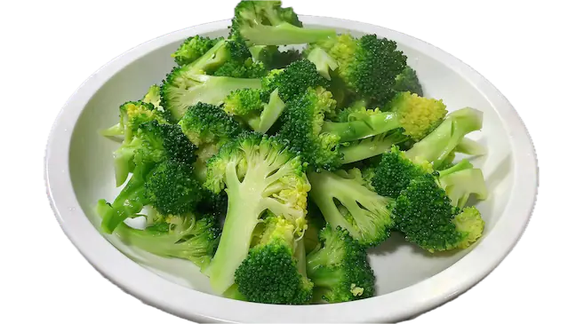
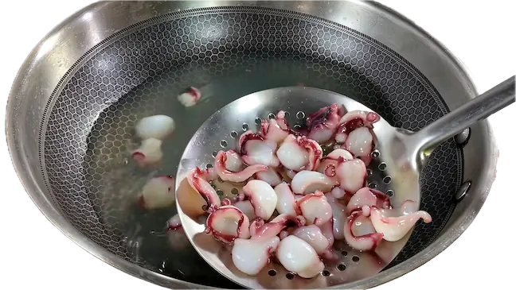
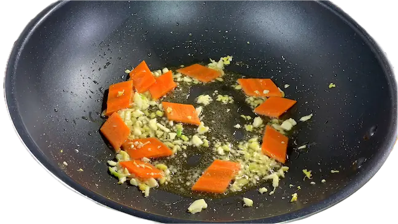
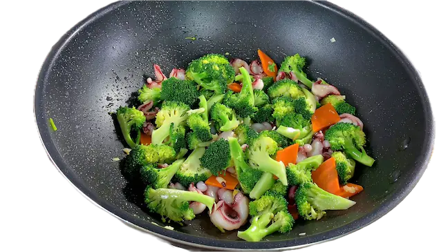
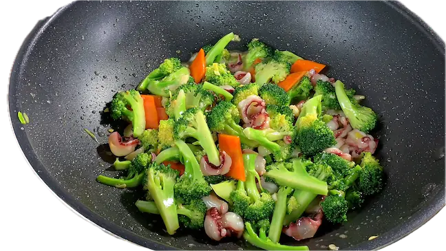
提示
- 喜欢干爽、锅气足的小炒，焯水的时间可以短点，食材8分熟就可以，重新下锅的时候炒熟；
- 喜欢汁多，焯水熟透食材，然后准备好料汁，水淀粉，起锅烧好料汁，勾芡，倒入食材，翻炒均匀挂上料汁就可以出锅了。
西兰花炒虾仁 汁多爽滑
- 起锅烧水，水开，焯熟食材，控干水捞出备用；
- 重新起锅，大火煮开酱汁，勾芡；
- 倒入食材，炒匀出锅。
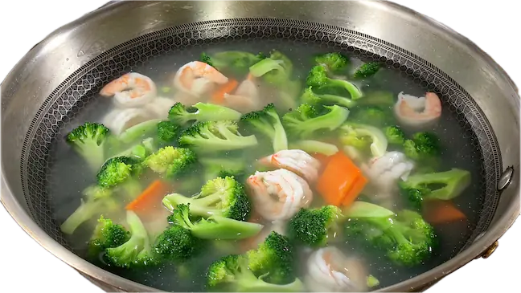
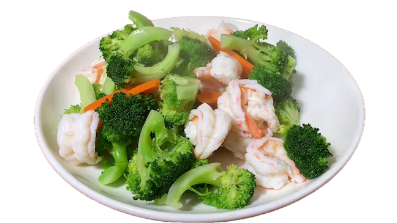
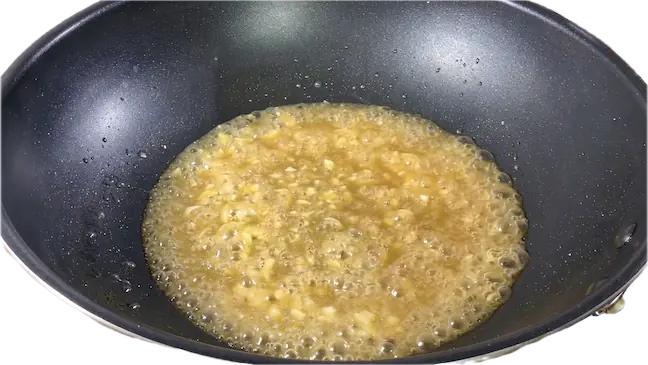
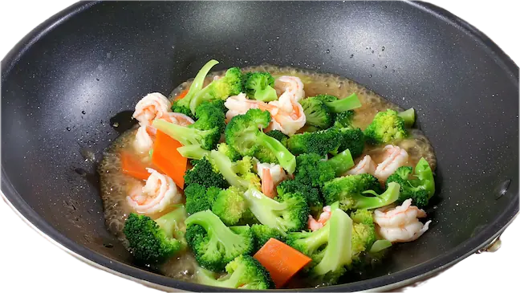
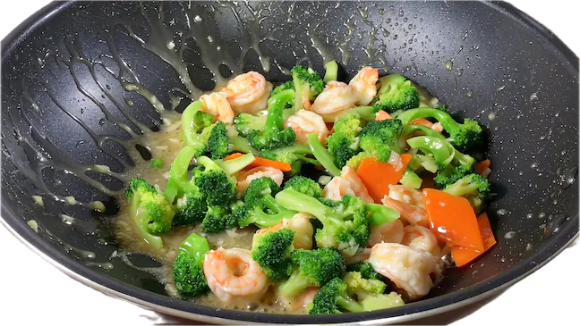